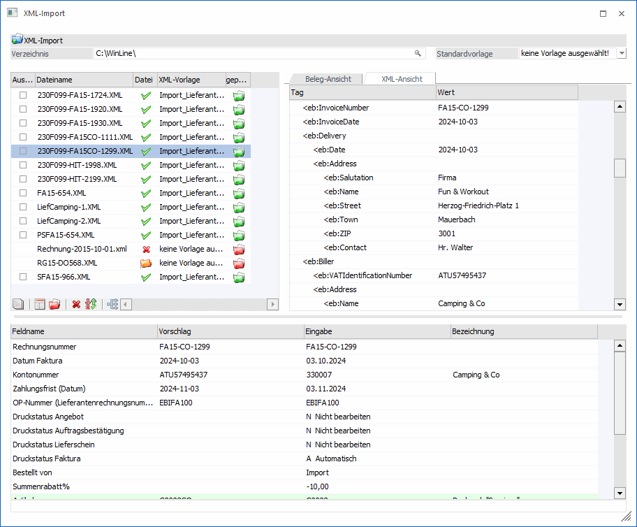
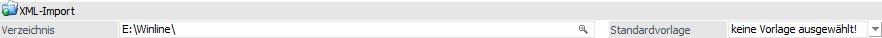
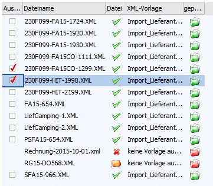
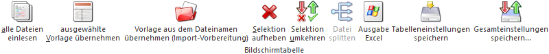
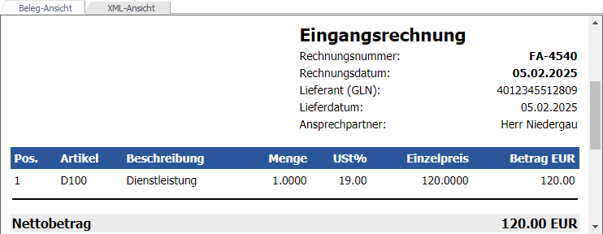
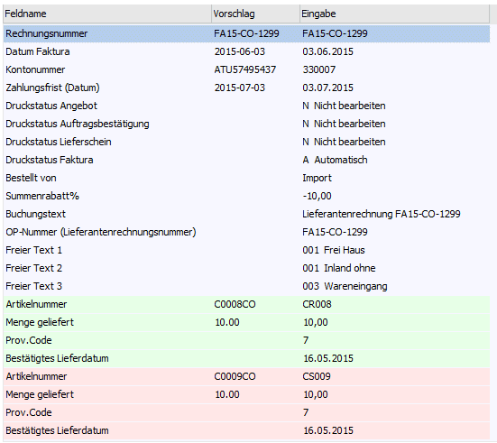
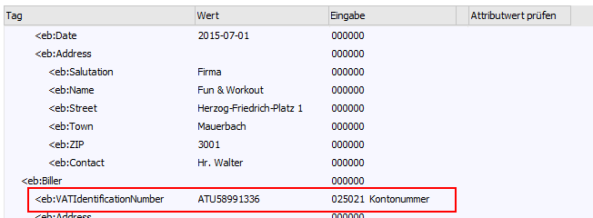

Der Menüpunkt "XML-Import" kann über…
1 WinLine FIBU
1 Buchen
1 XML-Import
… oder…
1 WinLine FAKT
1 Erfassen
1 XML-Import
1 XML-Import
… aufgerufen werden und dient zum Import von XML-Dateien. Des Weiteren können über einen eigenen Button div. EBInvoice-Einstellungen hinterlegt werden.
Hinweis
Wird ein Beleg oder eine Buchung aus einer XML-Datei importiert, so wird die XML-Datei gemeinsam mit dem Stylesheet (falls verfügbar) als neuer Archiveintrag eingefügt. Schlagwörter dafür sind die Kontonummer, das Tagesdatum, sowie die Fakturennummer.

Folgende Eingabefelder, Einstellungen und Information stehen zur Verfügung:
XML-Import

Ø Verzeichnis
Im Eingabefeld muss das entsprechende Verzeichnis angegeben werden, aus dem die Dateien importiert werden sollen. Beim Öffnen wird jenes Verzeichnis vorgeschlagen, welches der Benutzer zuletzt verwendet hat.
Ø Standardvorlage
Als Standardvorlage kann eine beliebige Importvorlage gewählt werden, die beim Einlesen der einzelnen Dateien zugewiesen werden soll. D.h. beim Vorschlag einer gültigen Vorlage (wenn der Focus in die Zeile der Datei gestellt wird) bzw. beim Drücken des Buttons "alle Dateien einlesen" wird nur noch diese Vorlage berücksichtigt; es wird keine weitere Vorlage vorgeschlagen.
Diese Hinterlegung der Standardvorlage wird für das angegebene Importverzeichnis und den aktiven Benutzer gespeichert und bei erneuter Auswahl des Importverzeichnisses wieder vorgeschlagen.
Tabelle "XML-Dateien"

Wurde im Feld "Verzeichnis" ein gültiges Verzeichnis angegeben und befinden sich in diesem auch entsprechende XML-Dateien, so werden diese in der Tabelle "XML-Dateien" aufgelistet.
Hinweis
Wird eine Zeile angewählt, so wird diese, sofern dieses nicht bereits geschehen ist, "eingelesen". Hierbei wird versucht eine passende Vorlage vorzubelegen und somit die Tabelle "XML-Inhalt" zu befüllt. Zusätzlich wird die Datei im rechten Teil des Fensters im "Klartext" angezeigt.
Ø Auswahl
Diese Option wird angezeigt und kann aktiviert werden, sobald eine angezeigte Datei geprüft und den Status "OK" hat. Ausgewählte Zeilen können in weiterer Folge importiert werden.
Ø Dateiname
In diesem Feld wird der Name der Datei angezeigt. Das Feld kann nicht bearbeitet werden.
Ø Datei
Im Feld "Datei" wird der Status der Datei angezeigt:
ü - Import offen
Die Datei wurde noch
nicht eingelesen; Eingelesen wird die Datei, indem man entweder die Zeile
anklickt, bzw. den dafür vorgesehenen Button verwendet.
ü - Import erfolgreich
Die Datei konnte
eingelesen werden
ü - Import nicht erfolgreich
Die Datei
konnte nicht eingelesen werden. Ein Grund dafür wäre, dass es sich um eine
ungültige XML-Datei handelt.
ü - Importpaket
In der angeführten Datei
sind mehrere Belege enthalten (EBPP verschickt nicht jede Rechnung als einzelne
XML-Datei, sondern packt mehrere Rechnungen zusammen in eine XML-Datei). Vor
einer Verarbeitung muss eine Splittung (siehe Tabellenbutton "Datei splitten")
erfolgen.
Ø XML-Vorlage
Aus der Auswahlliste kann eine Vorlage (XML-Vorlage) gewählt werden, die für den Import verwendet werden soll.
Ø geprüft
Hier gibt es zwei mögliche Stati:
ü - Import nicht möglich
Die Datei kann
noch nicht importiert werden (ungültige Datei; nicht alle Felder korrekt belegt;
keine Vorlage ausgewählt;…)
ü - Import möglich
Die Datei wurde
überprüft und für OK befunden; und steht zum Import bereit
Tabellenbuttons

Ø alle Dateien einlesen
Mit dieser Option können alle Dateien eingelesen werden, wobei für jede Datei versucht wird, die im Eintrag "Standardvorlage" hinterlegte Vorlage zuzuweisen. Kann diese Vorlage zum Import der Datei verwendet wurden, erfolgt die Zuweisung, andernfalls bleibt in der Spalte "XML-Vorlage" der Eintrag "keine Vorlage gewählt!" erhalten und muss manuell geändert werden.
Ø ausgewählte Vorlage übernehmen
Durch Drücken dieses Buttons werden alle Dateien eingelesen und geprüft ob die Vorlage der aktuellen Zeile auch bei anderen Dateien passen würde. Ist dies der Fall werden diese Zeilen entsprechend vorbelegt.
Ø Vorlage aus dem Dateinamen übernehmen (Import-Vorbereitung)
Die Importvorlagen werden entsprechend dem Dateinamen der Importdatei (die aus dem Menüpunkt "XML-Import vorbereiten" erzeugt wurde) zugeordnet.
Ø Selektion aufheben
Alle zur Auswahl gekennzeichneten Zeilen werden zurückgesetzt
Ø Selektion umkehren
Die Einstellungen der Checkboxen in der Spalte "Auswahl" werden ins Gegenteil verkehrt.
Ø Datei splitten
Diese Funktion dient dafür, eine Datei in einzelne XML-Dateien aufzuteilen. D.h. z.B. einzelne Rechnungsdateien die von einer Clearingstelle oder einem so genannten Consolidator geholt bzw. zur Verfügung gestellt werden, werden nicht in einzelnen XML-Dateien versandt, sondern mehrere XML-Dateien in einer. Bevor so eine Datei importiert werden kann muss diese gesplittet werden. Zu erkennen ist eine Datei am Ordner-Symbol (siehe dazu auch unter "möglicher Dateistatus").
Beispiel
Erhalten wird die Datei "Rechungen-11-2024.XML".
Wird diese gesplittet werden die Dateien "Rechnungen-11-2024-1.XML", "Rechnungen-11-2024-2.XML", "Rechnungen-11-2024-3.XML", usw. angezeigt.
Ø Ausgabe Excel
Durch Anwahl des Buttons "Ausgabe Excel" wird der Inhalt der Tabelle an Microsoft Excel übergeben.
Ø Tabelleneinstellungen speichern
Die Spalten einer Tabelle können grundsätzlich an beliebige Positionen verschoben, bzw. in der Breite entsprechend angepasst werden. Durch Anwahl des Buttons "Tabelleneinstellungen speichern" werden die Einstellungen benutzerspezifisch gespeichert und bei dem nächsten Aufruf des Programmpunktes wieder vorgeschlagen.
Ø Gesamteinstellungen speichern
Im Gegensatz zu "Tabelleneinstellungen speichern" können mit "Gesamteinstellungen speichern" mehrere Tabellenaufbauten gespeichert und nach Wunsch geladen werden. Zusätzlich werden Sonderfunktionen der Tabelle (z.B. "Spalte gruppieren") ebenfalls bei der Speicherung bedacht.
Ansicht

Der rechte Bereich des Fensters ist in 2 Register unterteilt.
Ø Beleg-Ansicht
Im Register "Beleg-Ansicht" wird die "aktive" Datei in einer lesbaren Ansicht dargestellt. Hierfür wird eine xslt-Datei - ein so genanntes Stylesheet - benötigt.
Hinweis
Über den Button "Ansicht" kann zwischen den zur Verfügung stehenden Stylesheet-Ansichten gewechselt werden.
Ø XML-Ansicht
Im Register "XML-Ansicht" werden die in der "aktiven" Datei enthaltenen Tags in Tabellenform angezeigt. Zu beachten ist hierbei, dass nur jene Tags angezeigt werden, für die es einen Wert oder ein Attribut gibt. D.h. z.B. das auch die Tags für eine eventuelle Signatur unterdrückt werden.
Tabelle "XML-Inhalt"

In der Tabelle im unteren Bereich des Fensters werden jene Werte angezeigt, die beim Import der Datei übernommen werden.
D.h. im linken Teil der Tabelle (Vorschlag) werden die Werte lt. XML-Datei vorgeschlagen, welche durch die XML-Vorlage "umgewandelt" werden können und so auch im rechten Teil (Eingabe) dargestellt werden. Ebenso werden eventuelle Vorbelegungen lt. XML-Vorlage hier angezeigt.
Die einzelnen Werte können in der Spalte "Eingabe" bearbeitet, bzw. müssen befüllt sein; erst dann kann die Datei importiert werden.
Hinweis
Felder für die Kostenrechnung können beim Import von Buchungen leer bleiben.
Folgende "Logiken" werden beim Füllen der einzelnen Felder verwendet:
ü Kontonummer
(Personenkonto)
Beim Import von Belegen sowie Buchungen wird der übernommene
Wert der XML-Datei auch im Feld "Kontobezeichnung" sowie "UID-Nummer" gesucht,
und in weiterer Folge die entsprechende Kontonummer übernommen. D.h. z.B. wird
in der Datei die Kontenbezeichnung "Allsport GmbH" gefunden, so würde beim
Import in den Demomandanten 300M die Kontonummer "330001" vorbelegt
werden.

ü Kontonummer (Sachkonto)
Beim
Buchungsimport (im besonderen Fall von EBInterface) wird, im Falle eines Imports
eines Steuerprozentsatzes als Sachkontonummer, jenes Sachkonto (mit einer
entsprechenden Steuerzeile) vorgeschlagen, dass am häufigsten als Gegenkonto für
das eingetragene Personenkonto verwendet wurde.
ü Artikelnummer
Beim Import von
Belegen wird der übernommene Wert der XML-Datei auch im Feld
"Artikelbezeichnung" gesucht, und in weiterer Folge die entsprechende
Artikelnummer übernommen. Beispiel: wird in der Datei die Artikelbezeichnung "
Mini Fitness Center" gefunden, so würde beim Import in den Demomandanten 300M
die Kontonummer "20002" vorbelegt werden.
Unterhalb dieser Tabelle wird je nach Vorgang eine Statuszeile angezeigt, in der unter anderem auch die Fehlermeldung dargestellt wird, wenn eine Datei nicht importiert werden kann.
Buttons
Ø Ok
Durch Drücken des Buttons "Ok" bzw. der Taste F5 kann der Import der Dateien gestartet werden. Die importierten Belege erhalten dabei eine so genannte Batchnummer, unter der diese z.B. im automatischen Belegdruck gesammelt gedruckt werden können.
Die Dateien werden beim Import in Verzeichnisse verschoben die, falls noch nicht vorhanden, mit dem Namen der verwendeten XML-Vorlage angelegt werden.
Ø Ende
Mit dem Button "Ende" bzw. der Taste ESC wird das Fenster geschlossen und alle getroffenen Einstellungen verworfen.
Ø Einstellungen
Über den Button "Einstellungen" kann das Fenster "E-Billing-Einstellungen" aufgerufen werden, in dem diverse Werte zu exportierenden XML-Dateien sowie EBPP-Einstellungen hinterlegt werden können.
Ø Ansicht
Mit Hilfe des Aufklapp-Buttons "Ansicht" kann die Darstellung innerhalb des Registers "Beleg-Ansicht" gesteuert werden. Im ersten Schritt werden hierbei die lt. Aufbau passenden Ansichten angeboten.
ü  - XML-Ansicht (steht immer zur
Verfügung)
- XML-Ansicht (steht immer zur
Verfügung)
Durch Auswahl des Eintrags "XML-Ansicht" wird der Inhalt der Datei
1 zu 1 dargestellt.
ü  - alle Ansichten anzeigen (steht immer zur
Verfügung)
- alle Ansichten anzeigen (steht immer zur
Verfügung)
Die WinLine bietet im ersten Schritt die lt. Datensatzaufbau
passenden Ansichten in der Auswahl an. Mit Hilfe des Eintrags "alle Ansichten
anzeigen" werden auch alle weiteren Ansichten angezeigt.
ü  - Stylesheet lt. XML-Datei
- Stylesheet lt. XML-Datei
Diese Auswahl
steht nur zur Verfügung, wenn innerhalb der XML-Datei auf ein Stylesheet
verwiesen wird. Sollte die xslt-Datei nicht existieren, so wird in der Anzeige
der Inhalt der XML-Datei 1 zu 1 dargestellt.
ü - CII-Ansicht
Es handelt sich bei dem
Eintrag um ein Stylesheet aus dem Bereich E-Billing Stylesheets des Typs
"CII".
ü  - UBL-Ansicht
- UBL-Ansicht
Es handelt sich bei dem
Eintrag um ein Stylesheet aus dem Bereich E-Billing Stylesheets des Typs
"UBL".
ü  - EBInvoice-Ansicht
- EBInvoice-Ansicht
Es handelt sich bei
dem Eintrag um ein Stylesheet aus dem Bereich E-Billing Stylesheets des Typs
"EBInvoice".
ü - Sonstige Ansicht
Es handelt sich bei
dem Eintrag um ein Stylesheet aus dem Bereich E-Billing Stylesheets des Typs
"Sonstige". Ob ein sonstiges Style-Sheet passendes
Hinweis
Wird ein Stylesheet lt. XML-Datei mitgeliefert, so wird dieses im ersten Schritt als Standard-Ansicht verwendet. Ansonsten jenes, welches lt. E-Billing Stylesheets als "Standard" des Typs definiert wurde.
Bei der Ermittlung der passenden Ansichten wird zunächst die XML-Datei analysiert und einem Stylesheet-Typ zugeordnet. Ist der Typ nicht bekannt, so wird "Sonstige" verwendet und die weitere Prüfung (Datei zu Stylesheet) findet über das Root-Tag statt.